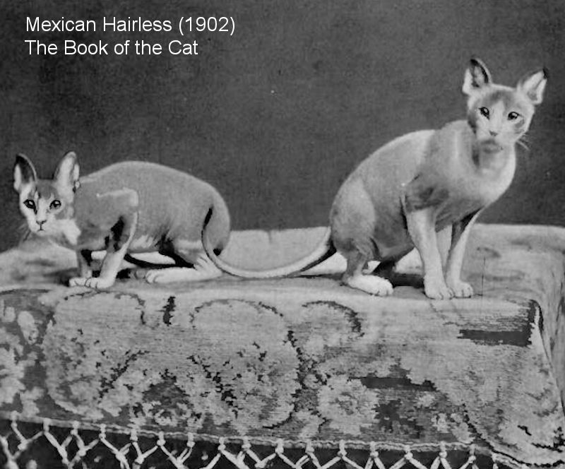

Appreciation!
It is Hispanic Heritage Month! As a way to celebrate we have decided to give you
information about a Hispanic cat! This kitty may have gone extinct and not recognized as a
standardized breed but we would still like to share its story. These kitties were known as the
"Mexican Hairless Cat" or as the "Aztec" cat. They typically did not have any fur, that is why
they received their name, but during the winter they grew light fur along the back and tail.
The last owner of these kitties described them as intelligent, friendly and people
-oriented. They enjoyed warm baths and liked to sleep in warm places. There isn't a lot of
information on these precious kitties, but we would like to get you to know they existed.
